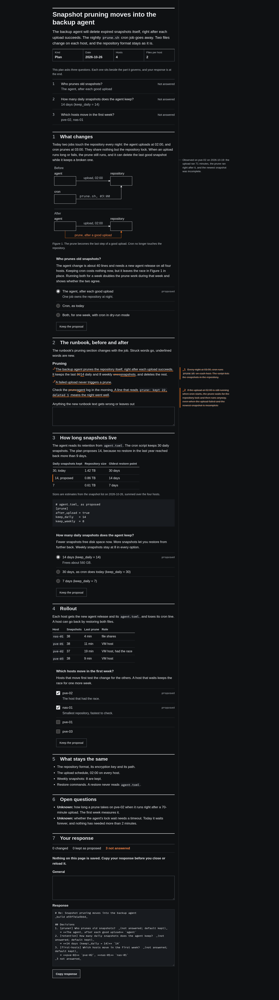

This page is a synthetic fixture. Every number on it is made up. It asks five questions, and your response is at the end.
What readers see
A plan page today is one 66-character column. On a 1440 px screen that column leaves two thirds of the width empty.1

The phone today
On a phone the same page is 6,163 px tall, and nothing on it says where you are.
Scheme
Layout
Load time
Pick a device and a cache. Every chart in this box shares one scale, so a bar keeps its length when you switch.
Device
Cache
| Moment | Before | After |
|---|---|---|
| First paint | 620 | 540 |
| Contents | 1,480 | 610 |
| Last image | 2,100 | 1,950 |
| Moment | Before | After |
|---|---|---|
| First paint | 310 | 290 |
| Contents | 900 | 330 |
| Last image | 1,200 | 1,180 |
| Moment | Before | After |
|---|---|---|
| First paint | 240 | 230 |
| Contents | 700 | 260 |
| Last image | 980 | 960 |
| Moment | Before | After |
|---|---|---|
| First paint | 120 | 118 |
| Contents | 380 | 140 |
| Last image | 510 | 505 |
Page weight
| Page | HTML | CSS | Script |
|---|---|---|---|
| Plan | 38 | 22 | 48 |
| Review | 21 | 22 | 48 |
| Report | 12.5 | 22 | 0 |
Before and after
Before
After
Claims
Each mark is the author's claim, not a check result.
- supported A wide screen leaves two thirds empty.
- partial Readers lose their place on a phone.
- unknown How often a reader opens the sheet.
- refuted The grid slows the first paint.
- proposed A cap of 40 KB on the base.
- changed The contents list fills itself.
- unchanged The question kit's response.
Files
| File | Added | Removed | Owner | Reviewed | Status | Note |
|---|---|---|---|---|---|---|
viewer/shell.css | 180 | 0 | viewer team | 2026-11-10 | changed | The rows and the dock |
viewer/shell.js | 240 | 0 | viewer team | 2026-11-10 | changed | Contents, counts and zoom |
viewer/look.css | 0 | 0 | viewer team | 2026-11-09 | unchanged | Old pages keep it |
viewer/shell.js lines 12-16 at 0a1b2c3function tally(rows) {
for (const r of rows) r.count = r.asks.length
for (const r of rows) r.count = r.asks.filter(open).length
write(rows.filter(changedSince))
}The count reads the kit's own state on each question and never a checkbox.2
Rollout
- to Three bases
- to Parts and shell
- Premise runs
- to Plan pages move
- Old layout retired
- Build. The builder inlines the base on every page.
- Move. New plan pages use the shell.
- Retire. Old pages keep their kit, since a published page never changes.
Regressions
| Moment | Change |
|---|---|
| First paint | −80 |
| Contents | −870 |
| Theme switch | +12.5 |
| View | Errors |
|---|---|
| Phone | 0 |
| Desktop | 0 |

- Measured on a synthetic plan page at 1440×900, 2026-11-10.
- The kit writes a state on each question. The shell reads only that.